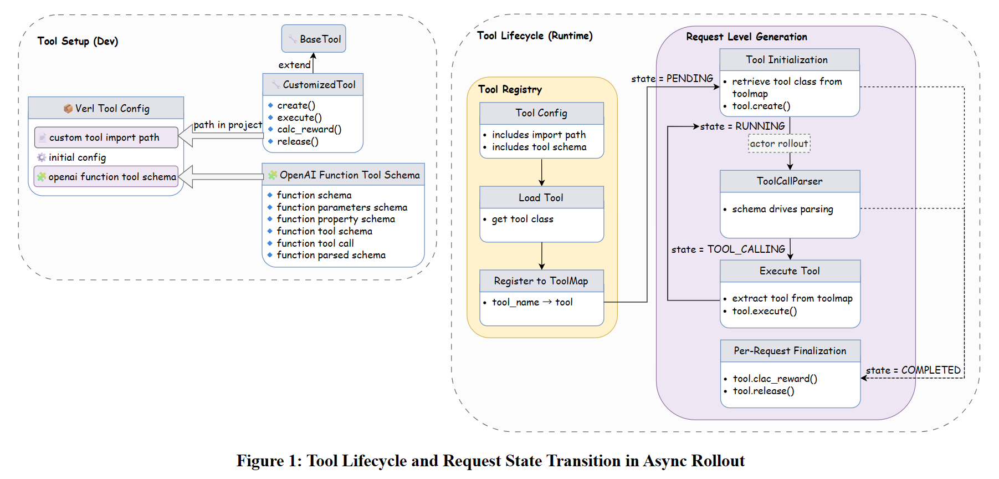
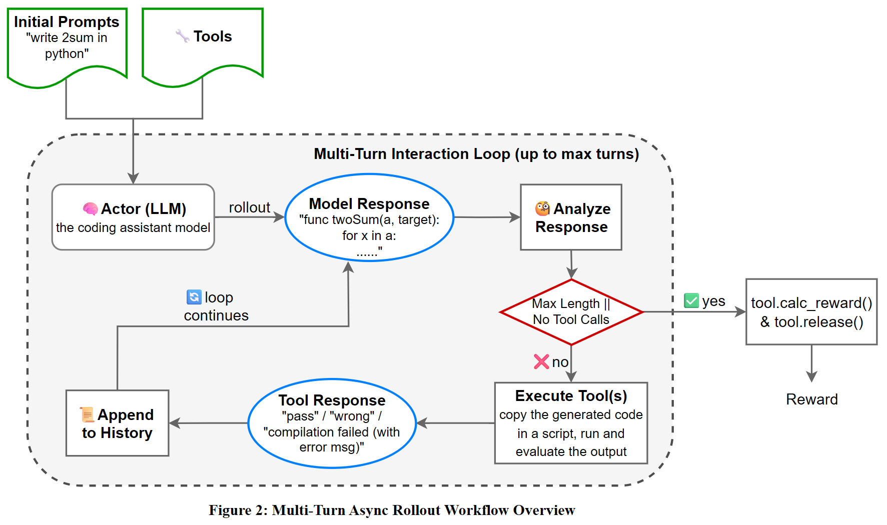

SGLang, verl, OpenBMB and Tsinghua University: Pioneering End-to-End Multi-Turn RLHF
by: The SGLang Team, May 12, 2025
We are thrilled to announce the release of the first fully functional, convergence-verified, end-to-end open source multi-turn Reinforcement Learning with Human Feedback (RLHF) framework, powered by SGLang and integrated with verl. This framework has been successfully integrated into the verl platform and is now open for use, providing a novel solution for Agentic reinforcement learning training.
After two months of intense development and a final five-day sprint, our team has delivered a robust solution that enables asynchronous multi-turn dialogues and tool-calling in Agentic RL. This release marks a significant step forward in scalable RLHF for large language models.
Pull Request: volcengine/verl#1037
Training performance (Used multi-turn on GSM8K tasks with Qwen2.5-3B-Instruct, GRPO policy, FSDP+TP hybrid parallelism, tool-calling enabled, and 256 batch size on 8×H100 GPUs): https://wandb.ai/swordfaith/gsm8k_async_rl/runs/0pv3qwcy?nw=nwuserswordfaith
What Problem We Solved?
Multi-turn RLHF is critical for training language models to handle complex and interactive dialogues, such as coding tasks, where the outputs of the generated scripts are needed as feedback for the next generation. However, existing frameworks lacked multi-turn rollout support, with a standardized tool calling method.
Our goals are：
- Support asynchronous multi-turn interactions with high efficiency.
- Integrate tool-calling into RLHF workflows in an easily-extensible style.
- Prove our training performance on complex, multi-turn suitable tasks.
- Operate reliably in large-scale, distributed environments.
Our Solution
- From Batch-Level to Request-Level Rollout : We extended verl's rollout interface to support asynchronous, per-request multi-turn interactions, where each dialogue can independently span multiple rounds and tool calls, decoupling from the batch structure.
- Generalized Tool Calling with Unified Schema: We support
OpenAIFunctionToolSchema, convertible with verl's Model Context Protocol / Agent2Agent Protocol. This allows seamless tool integration across both training and inference workflows. - Parameter Injection Mechanism: Users can dynamically select tools during sampling (e.g., via
need_tools_kwargs) and inject call parameters (tool_kwargs), streamlining tool integration. - GRPO Policy Gradient: We adopt the GRPO strategy (
adv_estimator = grpo) for stable reward propagation over multi-turn sequences.
How to Use It
Environment Setup
Create a New Docker Container
docker run \
-it \
--shm-size 32g \
--gpus all \
-v /models/shared/.cache:/root/.cache \
--ipc=host \
--network=host \
--privileged \
--name sglang_{your-name} \
lmsysorg/sglang:dev \
/bin/zsh
To restart the container after exiting from it:
docker start -i sglang_{your-name}
Update Python
apt update
apt install -y python3.10 python3.10-venv
python3 -m ensurepip --upgrade
Use Python Virtual Environment
# Create a virtual environment
python3 -m venv ~/.python/verl-multiturn-rollout
# Activate the virtual environment
source ~/.python/verl-multiturn-rollout/bin/activate
# Install uv
python3 -m pip install uv
Clone the verl Main Repository
cd ~
git clone https://github.com/volcengine/verl.git
cd verl
Set Up the Python Environment
# Install SGLang
python3 -m uv pip install -e ".[sglang]"
# Manually install flash-attn
python3 -m uv pip install wheel
python3 -m uv pip install packaging
python3 -m uv pip install flash-attn --no-build-isolation --no-deps
# Install verl
python3 -m uv pip install .
python3 -m uv pip install -r ./requirements.txt
8-GPU SGLang Test
Set Up Your WANDB_API_KEY Before Running
Refer to this guide if you're not sure where to find your API token.
export WANDB_API_KEY={YOUR_WANDB_API_KEY}
# Define a timestamp function
function now() {
date '+%Y-%m-%d-%H-%M'
}
Download the Dataset
python3 ./examples/data_preprocess/gsm8k_multiturn_w_tool.py
Run
# First make sure the now() function is available in current shell
# Create logs directory if it doesn't exist
mkdir -p logs
# Set GPUs and run with better log organization
export CUDA_VISIBLE_DEVICES=0,1,2,3,4,5,6,7
nohup bash examples/sglang_multiturn/run_qwen2.5-3b_gsm8k_multiturn.sh trainer.experiment_name=qwen2.5-3b_rm-gsm8k-sgl-multiturn-$(now) > logs/gsm8k-$(now).log 2>&1 &
Configurations
Basic Configuration
To enable multi-turn rollout, make sure to configure the following fields in your rollout configuration:
actor_rollout_ref:
rollout:
name: "sglang_async"
multi_turn:
enable: True
This configuration activates the AsyncSGLangRollout engine for multi-turn interaction during rollout.
Custom Tool Configuration
Tools are a critical component of our framework, which enables environment interactions, such as executing scripts, querying APIs, or calculating rewards. To integrate custom tools, you can define their behavior in a separate YAML file and reference it in the rollout configuration. To integrate a tool, follow these steps:
1. Define Tool Logic in Python
Each tool must subclass BaseTool, and implement:
create(instance_id, ...): Initialize tool state per rollout, can be skipped if the tool does not need to maintain state.execute(instance_id, parameters, ...): Perform the tool's core functionality (e.g. evaluate output, call APIs, do search, run code interpreter, etc.), the tool's response will be appended to the message history, and will support returning a step reward and tool metrics in future.calc_reward(instance_id): Compute the reward based on tool state and interaction.release(instance_id): Clean up any allocated resources, can be skipped if the tool does not need to maintain state.
2. Describe the Tool in YAML
You must provide a schema for each tool using OpenAI's function calling format, including name, description, parameters, and types. The YAML file is then referenced in the rollout config.
actor_rollout_ref:
rollout:
multi_turn:
tool_config_path: <path_to_tool_yaml_file>
format: chatml
tool_config_path: Path to a YAML file defining all tool schemas and associated Python classes.format: Format for tool interaction messages (currently supportschatmlonly).

Example: GSM8K Tool Configuration
To illustrate how to configure a tool, we provide an example based on the Gsm8kTool, designed for evaluating answers to GSM8K math problems to calculate rewards. The tool configuration is defined here.
Breakdown of the Configuration:
- class_name: Specifies the Python class implementing the tool's logic. The class must be accessible in the codebase.
- config: An optional field for additional tool-specific configurations used in
__init__method (e.g., API keys, model parameters). - tool_schema: Defines the tool's interface using a schema compatible with OpenAIFunctionToolSchema.
- type: "function": Indicates the tool is a function-based tool.
- function.name: The tool's identifier (calc_gsm8k_reward), used during tool selection.
- function.description: A human-readable description of the tool's purpose, which will be used in the model chat template.
- function.parameters: Describes the input parameters the tool expects. The required field defines the mandatory parameters, also will be used in the model chat template.
How Tool Interactions Work
During rollout:
- Preprocess
generate_sequences_with_toolsprompts with intersection of available tools and sample_leveltool_kwargsto generate prompt with sample specific tools and handle prompts in message list way. - The LLM generates a response containing a structured function call (tool invocation) based on the schema.
AsyncSGLangRolloutuses aFunctionCallParserto detect and extract tool calls from the output.- The rollout engine calls
tool.execute()with parsed arguments. - The tool may:
- Return a textual tool response, which will be appended to the message history with
toolrole. - Return a step reward and tool metrics, which can be used to calculate the final reward and monitor tool performance. - Update internal tool state - The engine appends the tool response to the message history and continues the dialogue.
- After the full rollout, the tool's
calc_reward()is called to compute final reward.
With this plugin-style architecture, tools can be flexibly reused across tasks and agents without changing the core engine or rollout loop.

Challenges and Methods
We share the technical challenges encountered during development and our current solutions, welcoming community collaboration to maintain and improve the framework:
-
Multi-Turn Loss Masking: Most existing RLHF frameworks assume single-turn generation patterns and lack support for granular, token-level loss masking across multiple dialogue turns. However, in multi-turn settings—especially with tool interactions—not every generated token should contribute to the learning signal. For example, some tool-generated responses should be excluded from the optimization process. We addressed this by designing a custom multi-turn loss masking mechanism, allowing fine-grained control over which tokens are included in policy gradient updates, thereby ensuring accurate reward computation.
-
Generalized Tool API Design: The environment in RLHF training scenarios can be complex, requiring customized tools for agents to interact with the external world. To support flexible and reusable tool integration, we designed a generalized tool interface. This design enables users to register tools with their customized functions into the rollout process. By unifying tool definitions in a schema-driven format, we make our framework highly extensible to easily add tools and reuse them across tasks and models without much modification.
-
SPMD Conflicts in Tool Invocation: In tensor-parallel (TP) environments, invoking external tools—such as API calls, script evaluators, or reward calculators—must be controlled to avoid concurrency issues. A naive implementation may result in the same tool being called multiple times in parallel across TP ranks, causing inconsistencies or deadlocks. To avoid this, all tool invocations are restricted to TP rank 0, with results broadcast to other ranks. This avoids performance bottlenecks due to redundant calls.
-
Asynchronous Rollout for Multi-Turn Interactions: Synchronous rollouts often suffer from the long-tail problem, where the slowest sample in a batch delays the entire pipeline. This issue is especially prominent in multi-turn tasks involving variable-length dialogues and tool calls. To address this, we implemented asynchronous rollout at the request level, allowing each dialogue to progress independently.
-
Event Loop Conflicts in Asynchronous Execution: During testing, we encountered a problem:
async_generatedeadlocked. After extensive investigation, we found that the root cause was the existence of multiple concurrent event loops, violating Python's asyncio design. SGLang internally manages its own asynchronous event loop to coordinate token streaming, multi-turn interaction, and memory-efficient generation. We mistakenly added a second event loop, thus making the program stuck forever. Our fix ensures that all async execution happens within SGLang's own loop by running the existing loop instead of invoking asyncio.run() inside async_generate.
Acknowledgments
We extend our gratitude to over ten contributors from both China and the United States:
- ModelBest/OpenBMB
- Tsinghua University
- SGLang RLHF Team
- verl Team
Our Work Plan
(Continuously updating, track Multi-turn rollout Status & Roadmap for latest status and plans.)
With the initial version stabilized and training verified, we are now expanding the capabilities and real-world applicability of our multi-turn RLHF framework. Our next-phase goals include:
Stage 1 (Completed)
- Transition from batch-level to request-level async rollout with tool interaction
- Support FSDP multi-turn with guaranteed training accuracy
Stage 2 (Currently In Progress)
- Add support for real-world tools, such as Search and Code Interpreter
- Provide Qwen3 training examples
- Integrate FSDP2 for more scalable memory-efficient training
- Support multi-node training
- Add initial support for Vision Language Models (VLM)
- Support Megatron backend
Stage 3
- Introduce a new Agentic Trainer that supports fully asynchronous loops: fetch → rollout → reward calculation → filter micro-batch
- Support partial rollout and replay buffer, enabling fine-grained asynchronization and concurrency
- Expand tool coverage and task variety
Stage 4
- Introduce user interaction simulation for real user feedback modeling
Framework Refactor
- Combine
sglangandsglang_asyncrollout engines to unify the interface
We actively welcome the community to collaborate with us to push forward the frontier of RLHF research and applications.